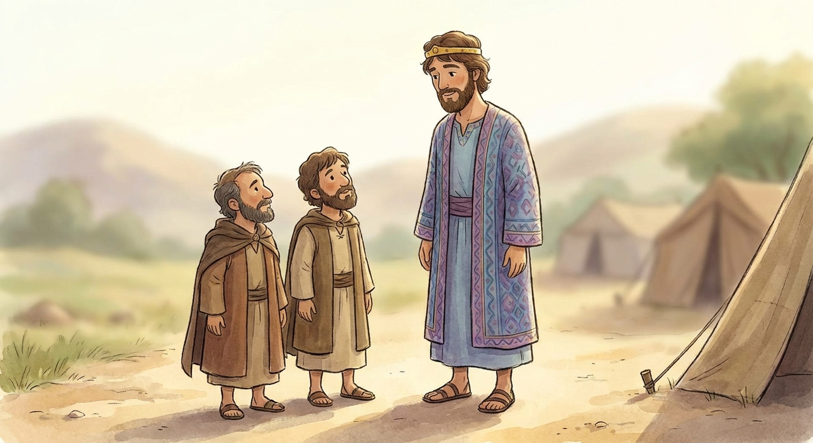
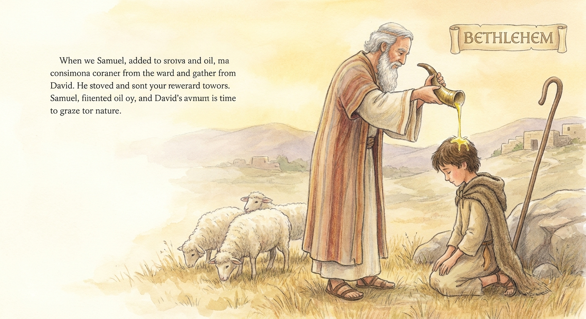

1 Samuel 16:7 · "man looketh on the outward appearance, but the Lord looketh on the heart."
1 Samuel 8–10; 13; 15–16 · Come Follow Me, Week 24Primary (9-year-olds), Elk Ridge 15th Ward30 min
Objective. Help the kids feel that the Lord does not rank or sort us the way the world does. The world measures the outside (strong, smart, beautiful, rich, fast, famous, big). The Lord "looketh on the heart," and He loves every one of us the same. Anchor it with God passing over tall, impressive Saul and choosing David, the shepherd boy nobody thought to call in.
↩ Where we are on the timeline
Two weeks ago was Joshua ("as for me and my house, we will serve the Lord"). Last week was the Judges, which ends with "there was no king in Israel: every man did that which was right in his own eyes." In between, God called young Samuel ("Speak, Lord, for thy servant heareth"). Today the people get tired of judges and demand a king, and God uses that moment to teach the most important rule about how He sees people.
ExodusMoses
→
ConquestJoshua
→
The cycleJudges
→
ProphetSamuel
→
KingsSaul → David
Israel moves from judges to kings. That switch is what today is about.
01
Opening activity: who is the most impressive?
~8 min
Here are some of the people the world calls "the best." On the screen (or with the printed cards) put them in order, most impressive first. Let the kids argue about it. Then push the button and see how the Lord sees the very same lineup.
Interactive · drag to rank
The Lineup
Drag the cards to rank them from most impressive to least. Then tap "How does the Lord see them?"
◄ most impressiveleast impressive ►
1 Samuel 16:7"The Lord seeth not as man seeth; for man looketh on the outward appearance, but the Lord looketh on the heart."
He does not rank them. He looks at the heart, and He loves them all the same.
Ask (do not answer yet)
Does Heavenly Father line us up like this? Does He love the strongest person more than the smallest person? Keep King Saul in mind, we are about to find out why he is in the lineup.
02
Israel picks a king for his looks
~6 min
The people come to Samuel: give us "a king to judge us like all the nations" (1 Samuel 8:5). They want to look like everybody else.
The Lord tells Samuel something sad: "they have not rejected thee, but they have rejected me, that I should not reign over them" (8:7). The real King was always supposed to be God.
1 Samuel 9:2
"...a choice young man, and a goodly: ...from his shoulders and upward he was higher than any of the people."

Saul: the tallest, best-looking man in Israel. That is why he is in our lineup, he is the world's idea of a perfect king.
Ask: why did the people love Saul right away? (He looked the part.)
At first Saul is humble (he even hides in the baggage, 10:22). But once he is king his heart turns proud and he stops obeying God (chapters 13 and 15). Samuel tells him the hard truth: "to obey is better than sacrifice" (15:22). A great-looking king with a disobedient heart is not what God wanted.
03
The big lesson: the Lord looketh on the heart
~7 min
God sends Samuel to a man named Jesse in Bethlehem to anoint a new king from his sons. Jesse lines up his sons, just like we lined up our pictures.
The oldest, Eliab, is tall and impressive. Samuel almost makes the same mistake the people made with Saul, thinking "Surely the Lord's anointed is before him" (16:6).
1 Samuel 16:7
"Look not on his countenance, or on the height of his stature... for the Lord seeth not as man seeth; for man looketh on the outward appearance, but the Lord looketh on the heart."
Samuel goes down the whole line, seven strong sons, and God says no to every one. Finally Samuel asks: are these all your children? Jesse says, well, there is the youngest, out keeping the sheep, and he did not even bother to call him in (16:11).
That overlooked shepherd boy is David. God says, "Arise, anoint him: for this is he" (16:12). God chose the one nobody else thought to invite, because of his heart.

Samuel anoints David, the youngest son, the shepherd. "the Lord looketh on the heart."
04
Back to the lineup: He loves us all the same
~6 min
Scroll back up and press the button again, or stack the printed cards into one pile. Ask: now that we know 16:7, how does Heavenly Father line these people up? (He does not. He looks at the heart and loves them all the same.)
What does it mean that God looks on YOUR heart?
You do not have to be the best at anything to be loved by Him. You already are, completely. And the kind of heart you are building (kind, honest, willing to obey and serve) is exactly what He is looking at and helping grow.
Land it: Saul looked like the best and lost his way. David looked like the least and was "a man after his own heart" (13:14). Outsides did not decide it. Hearts did.
05
Watch: the boy God chose for his heart
~3 min
God picked David for his heart, not his size. The very next thing in David's life shows why that heart mattered: he trusts God against a giant.
"David and Goliath," official Old Testament Stories for Kids (Gospel for Kids, the Church's children's channel). About 2.5 min. This is the next chapter (1 Samuel 17), shown to picture the kind of heart God was looking at.
Ask after the video
Where did David's courage against Goliath come from? (The same heart God saw when He chose him: a heart that trusts the Lord.)
06
Application and testimony
~3 min
Challenge for the week: twice this week, look at someone the way the Lord does. Be kind to a person who gets left out or "ranked last," and remember God loves them exactly as much as anyone famous. And when you feel like the least impressive one in the room, remember God already chose to love you, heart first.
Brief testimony: Heavenly Father and Jesus Christ see past everything the world measures and love each of us the same. Close with prayer.